Final Assignment Mechatronics
Jón Óskar Guðmundsson and Zoraiz Ahmad
This is the workbook for the final assignment in Tölvustýrður Vélbúnaður. The project is a prototype shelf-scanning robot that moves along a shelf, takes images of book or DVD spines, and sends the information to an Excel document.
3rd April
Trying to find a good idea
Ideas:
- Something related to AI, using a Raspberry Pi to connect a robot to AI, although we were not sure what the use of it would be.
- AI-controlled sorting of screws and small parts.
- AI-controlled sorting of trash into plastic, paper, and organic waste.
- A glove that connects to a computer, where you can take notes and draw simple images.
- An alarm clock that wakes you up not only with sound but also with light, and maybe also opens up the window to let some fresh air in.
- Essentially a vacuum cleaner that is always on and sucks up dust around the area of your high-end PC so that there will be much less dust going into the PC. It could also be used to clean tight areas like under the bed or under cupboards. However, that is a lot of work and we probably would not have time to create a good vacuum cleaner.
5th April
We decided to do none of those ideas and instead do this. We will do a prototype shelf-scanning system that moves along a shelf and records the books on said shelf. It will put those book titles into an Excel document with the bookshelf name.
Planning
We are expecting this to take about 60 hours for each person, which means we will have to plan our time very carefully. For the wine robot, we spent too much time on the CAD design and not enough time on the electronic part or doing tests. Also, this project is more focused on electrical and programming work than the wine robot was. The 60 hours do not include the time it takes to make the CAD design, since it will be done in a final assignment in another class, Tölvuvædd Hönnun.
Goals
To build a robot that moves left to right on shelves. It has a camera that either takes pictures of books/DVDs or takes a live recording of them. That recording is then processed by some AI bot that reads the names of those books/DVDs and puts them into an Excel document, along with the name of that shelf, so it is easy to find said book/DVD. The robot should not be connected directly to a computer but instead use some other form of communication. For the robot to consistently be able to get the correct information from books, it will probably need to have lighting that is always about the same, so we will have to include lights on the robot. It will also have a sensor, HC-SR04, that senses when the robot is getting too close to the shelf wall, and at that point the robot can shut off. It would be good to have the robot adjust to different thicknesses of shelves, but since it is only a prototype, that should only be something extra we could do if we have time.
Risk management
In order to not have things fail after having printed the final prototype, we will have to do smaller tests for each component to make sure that it is working properly.
Here are some tests, in order, that will have to be done, but there might be more:
- Testing communication with the laptop without being connected directly.
- Testing the movement of the robot to see if it is smooth and precise.
- Testing the safety stop sensor.
- Testing AI ability to get the book names correct, with different lighting and speed of movement. Reflections and an out-of-focus camera could have negative effects.
- Testing the data going into an Excel document.
- Integrating everything together and retesting everything.
Time management
- Making and testing AI abilities: 12–18 hours.
- Sending data into Excel: 4–8 hours.
- Communication with laptop: 8–12 hours.
- Robot movement smooth and precise: 14–20 hours.
- Safety stop sensor: 6–10 hours.
- Integrating: 8–12 hours.
That totals around 50–70 hours in total, but these are just rough estimates.
7th April
We are going to prepare the AI tool that will read the titles from the images taken by the camera. We will use OCR to read titles on the books. While diving into how this works, it became much clearer that we should start by testing the ESP32 camera to test its limitations and get more of a feel for the camera. Then we can start creating Python code to read the titles based on that.
8th April
Tested the XIAO ESP32-S3 with the OV3660 camera. It did not come out great. We put some light with it, but it still would not be able to read some books.
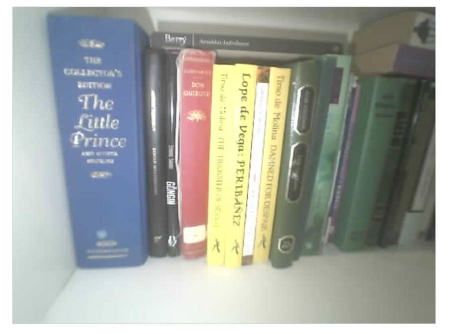
It is definitely possible to tune this with better lighting and a better angle, but probably not to the point where we get every title on there. We will also test the OV5640 camera, which should be better.
Making the description of the project.
9th April
Testing the OV5640
Like this with:
s->set_hmirror(s, 1);
s->set_vflip(s, 0);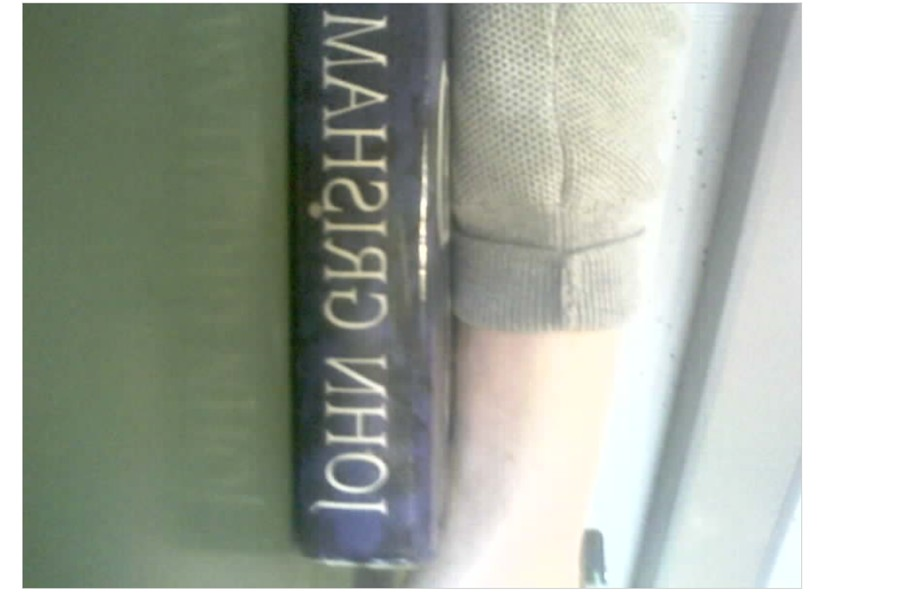
Like this with:
s->set_hmirror(s, 1);
s->set_vflip(s, 1);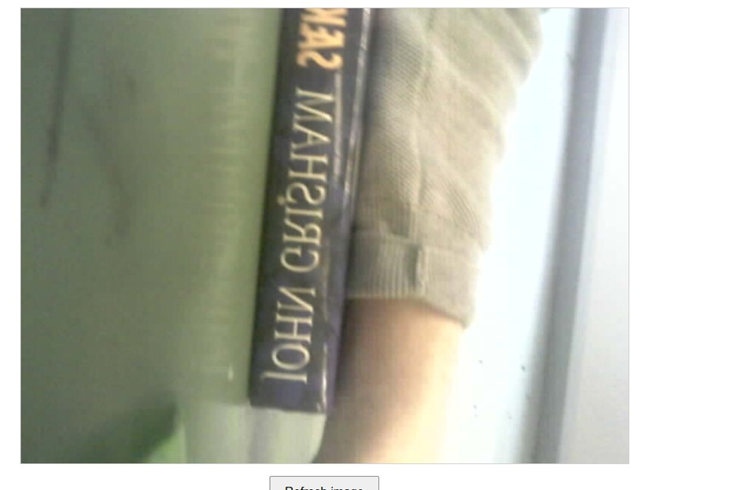
And the correct one is here:
s->set_hmirror(s, 0);
s->set_vflip(s, 1);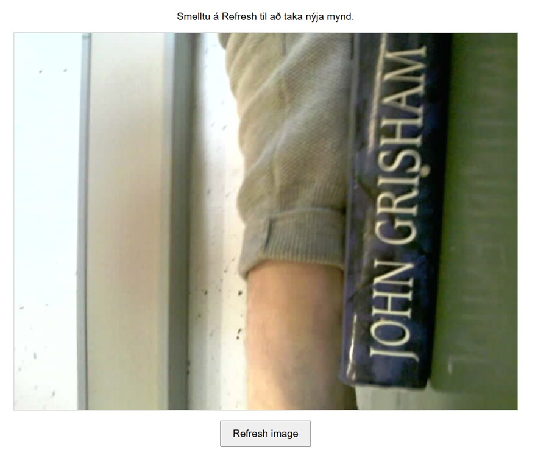
But it is upside down.
So:
s->set_hmirror(s, 1);
s->set_vflip(s, 0);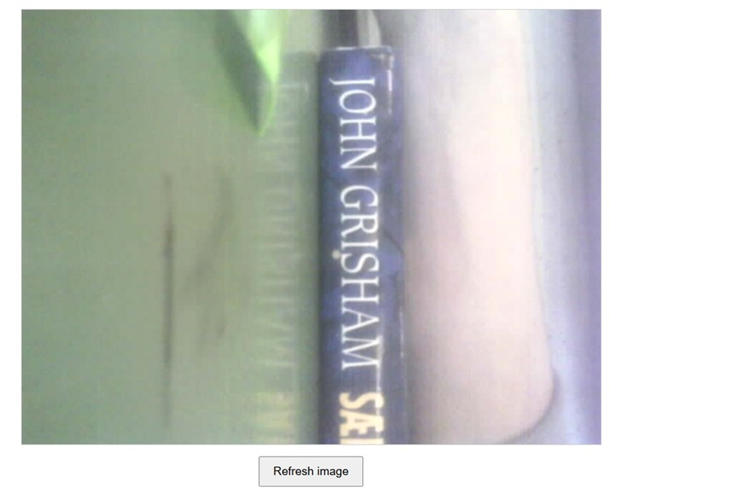
We could use a locking knob to lock the wheels into the correct shelf thickness, maybe from a music sheet stand.
Issues: The idea was to have the robot lock to the shelf with the wheels, but that means there is clamping on the wheels, which could affect the motor so it does not run. The idea was to use a simple stepper motor, 28BYJ-48, since there is not a lot of torque and not much weight on the part.
10th April
Testing components
Motor
Testing the stepper motor 28BYJ-48. It works fine with the tires.
The stepper motor connects to:
- Stepper motor driver
- Connects to 5V.
- Connects to GND.
- Connects to four different digital pins.
We need to think about powering the ESP32-S3 with 5 volts, which is what all our components need to run smoothly.
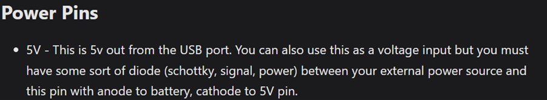
Here it said we can use the 5V pin as an input rather than an output. We could use a 4 × 1.5V battery pack with a boost and buck converter to power all of the components.
Lighting
The lighting has to be able to be tuned for the camera. It needs to be bright enough to make a difference and has to be even lighting.
None of the LED lights in the Arduino kit are quite strong enough to have any difference.
After some consideration, we will use two LED strips on either side of the camera with see-through acrylic plates and baking paper to make the light even.
12th April
We are going to test the camera, light, and motor together with cardboard and tape. The goal of this testing is firstly to change the settings of the camera so that the images taken are very clear. Secondly, we will be checking how far away the camera needs to be from the books to be able to take a good picture of the lettering. By the end of this, we should also have a pretty good code that we will be able to use for the final prototype.
The lighting does not work if it is straight at the books, but it can work at an angle. Here is a picture showing the light shining directly towards the books.
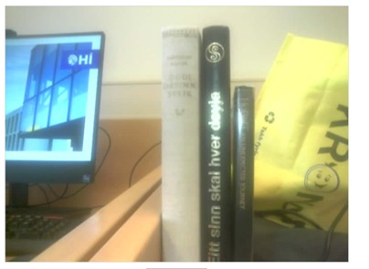
12 cm distance from the DVDs.
Around 8 cm height from the shelf.
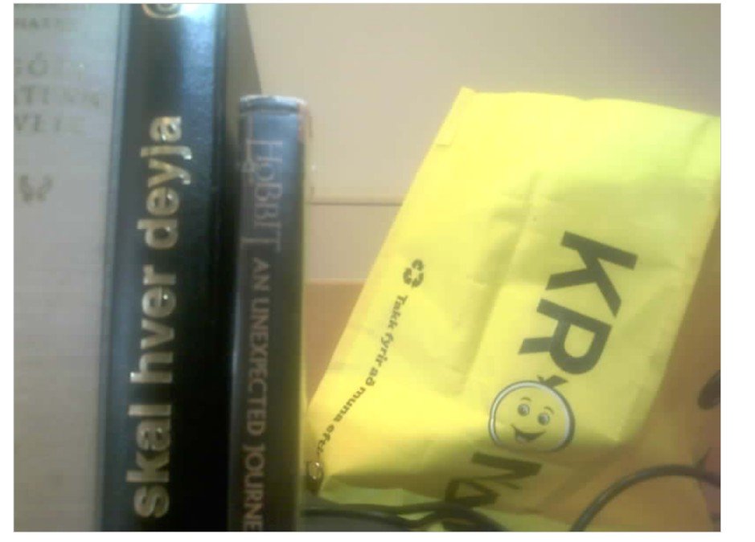
After doing some tests for the required distance from the camera, we decided to only do a prototype for DVDs, or books similar to that size. The problem is that the books are of all different sizes and the lettering size is also quite different. This would require a different camera that can zoom out, but we do not have that.
We planned to test the wheels moving left to right with cardboard, but the cardboard always gave in, so the wheels did not properly latch onto the shelf plate. This means we will instead prepare a 3D-printed part, print it, and test again tomorrow.
XIAO ESP32-S3 layout
We are making the layout board for the XIAO ESP32-S3. The camera will be in the middle of the assembly, so the layout board will be the same. The wires will then either go left or right from that, so it would be best to have 5V and GND.
Ultrasonic ranging - HC-SR04
- Connects to:
- D7 → Trig.
- D10 → Echo through resistor divider.
- GND.
- 5V.
Stepper motor - 28BYJ
- Connects to:
- Stepper motor driver.
13th April
Stepper motor driver - ULN2003
- Connects to:
- GND.
- 5V.
- D0.
- D1.
- D2.
- D3.
LED strip × 2
- Connects to:
- GND.
- 5V.
ESP32-S3
- Connects to:
- GND.
- 5V.
Did tests on the 3D printer for the fit between the wheels and the stepper motor. We did a +0.5 increment three times, since holes and gaps often come out smaller in the 3D print. The correct size ended up being somewhere between 0–0.5 mm increment. We will try using 0.08 mm.
14th April
Doing the press fit of a nut inside a hole for the locking mechanism of the wheels. This will make it so that we can adjust the distance between the wheels depending on different thicknesses of plates on the shelves. It also takes some demand off the stepper motor, since the wheels are not the primary clamping force on the plates of the shelf.
For an 8 mm hexagon, we determined it was best to use an 8.045 mm gap.
15th April
Designing the part
What to think about:
- Wheels have to be aligned and not loose so that they do not get misaligned.
- Center of mass has to be on the wheels.
- The camera should be around 12 cm distance from the DVDs/books, preferably more, and around 8 cm height from the shelf.
- Light should be in front of the camera.
- Shelf thicknesses are typically 15–25 mm.
What needs to be in:
- Ultrasonic ranging × 1.
- Stepper motor × 1.
- LED strip × 2.
- ESP32-S3 with camera on layout board × 1.
- Jumper connectors.
Shelf height mechanism
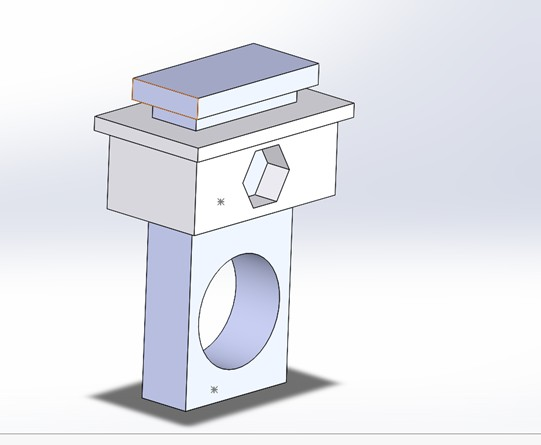
Made a board for the XIAO ESP32-S3.
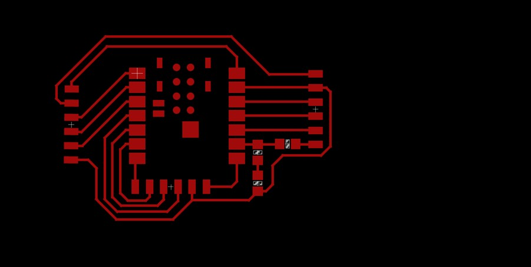
After milling this, we should be able to test every component with the ESP32-S3 and with voltage input from a power adapter.
18th April
We are both finishing the design and 3D printing, and starting to make the AI tool that extracts the text from the books/DVDs. We will be using EasyOCR to extract the text from the images that are taken with the camera.
This is currently how it is reading:
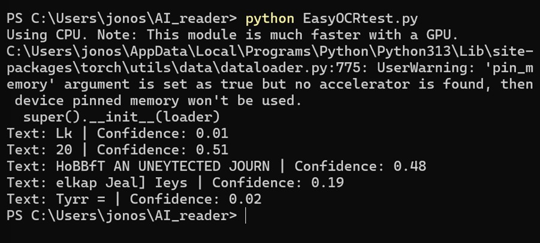
HoBBft AN UNEYTECTED JOURN, from this image.
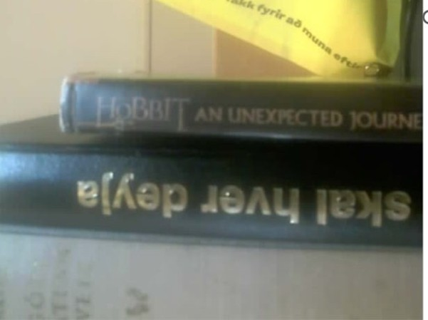
Also, it cannot read the other text since it is upside down.
Some common-sense AI tool should be able to notice that this is actually Hobbit: An Unexpected Journey. For that, we will use the OpenAI Responses API.
This is essentially the process it goes through after having gotten an image:
- OCR reads the image.
- OCR returns rough text.
- Python joins that OCR text into a string.
- Python sends that string to the LLM.
- LLM returns clean JSON.
- Python saves the JSON to CSV.
I have to create some API key to be able to use it. It costs some money for each run, so we will actually be using this last.
Right now, we have to find a way for the ESP32-S3 to send an image to our computer. We ran a code that can send to my computer by knowing the IP of the computer.
We also ran a Python code in CMD that waits for something to send data to the address /upload. When the ESP32 sends a JPEG with POST, it receives the raw image bytes, creates a folder called received_images if it does not already exist, and saves each incoming image as img_0.jpg, img_1.jpg, and so on.
And it works.
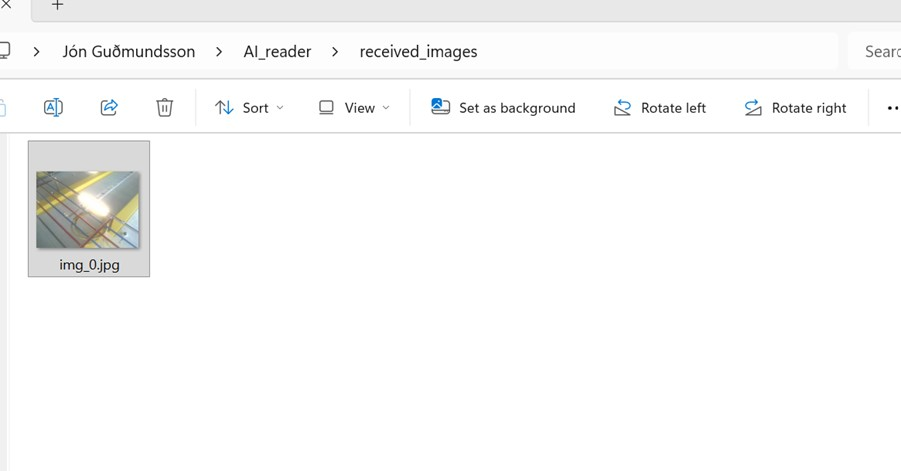
19th April
We are testing the camera reading, where we receive one image from the camera and the OCR reads it automatically and displays the text on the serial monitor.
Finalising the design
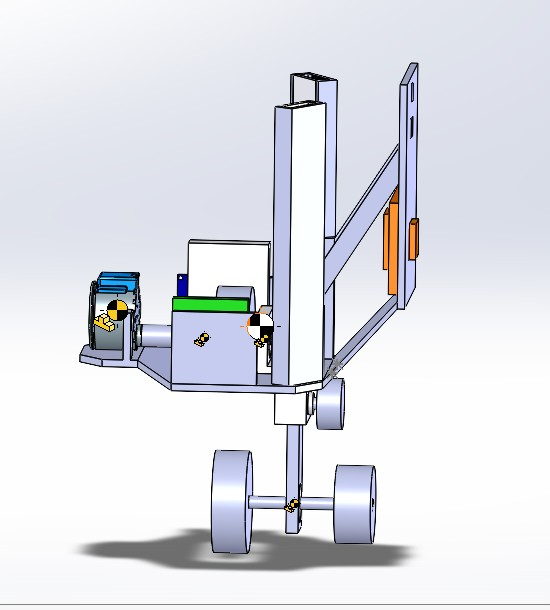
We changed the design so that the center of mass of the assembly would be as close to the center of the upper wheel as possible.
It is not quite there, but it is pretty close. We can also move the wheel slightly closer to the center of mass, as it does have clearance for that. Plus, this is just an estimation. It does not include wires that can add weight.
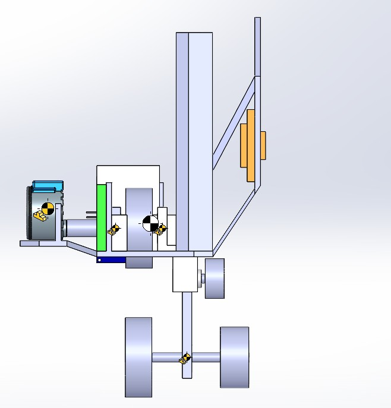
20th April
The OCR is not reading the names very well. Sometimes it is just gibberish and rarely good enough. Also, the idea was for the ChatGPT API to only do some common sense after the OCR. For example, OCR reads the book Herman Melville by Moby Dick, but the API says, “No, it is Moby Dick by Herman Melville,” or Nobbit a unextected journ is Hobbit: An Unexpected Journey. However, it turns out that the API then needs to do web searching.
Instead, we tested using ChatGPT to read the images directly and not using OCR for anything, and that worked a lot better. It could read most things pretty well. The only issue was that if the light was really bright, it could not read light-colored books/DVDs, and if it was dark, it could not read the dark books/DVDs.
We solved that by changing the brightness of the camera each time it stops to take images, so it takes two images with high brightness and two images with low brightness.
Here is the prompt we have for it inside the code server_test.py.
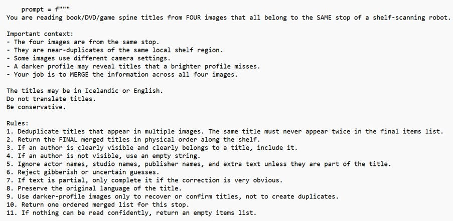
server_test.py.21st April
We have the robot and it works to move across the shelf. The center of mass in the direction of the shelf was a little bit too much to the left side, so now the robot tilts a bit. But that tilt kind of goes away when we connect it to the power adapter, since those jumpers push the robot a bit back to equilibrium.
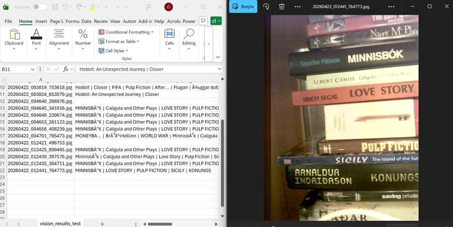
Readings are going well, although we have to allow Icelandic letters in Excel.
22nd April
Everything was ready for the presentation.
Here is a video showing the robot working pretty well. The readings are not perfect, but there are definitely some that come out very well.